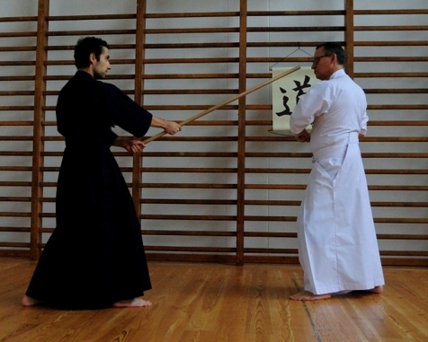

(Zen Nihon Kendo Renmei ou ZNKR) Jodo
Jodo significa literalmente “a via do Jo”, i.e. do bastão de madeira (de média dimensão).
As técnicas mais divulgadas desta arte são as adotadas pela Zen Nihon Kendo Renmei ou ZNKR (Federação Japonesa de Kendo) com base no currículo que foi desenvolvido a partir de uma fonte importante do Jojutsu tradicional, baseada na tradição estabelecida pelo Samurai do Sec. XVI, Muso Gonnosuke (Katsuyoshi).

A prática do Jodo exige destreza manual, disciplina postural, excelente coordenação, e a capacidade de agir instantaneamente em função de avaliações corretas e decisões acertadas, incorporando em cada ação ou movimento a noção exata de espaço, distância, velocidade e força, imbuídas de um espírito forte, corajoso e indomável.

O Jodoka, i.e. o praticante de Jodo, aprende e desenvolver os dois papéis, o do Jo (Shijo) e do sabre (Uchidachi), e é através do treino repetido das formas ou sequências predefinidas, designadas por Katas, que vai aperfeiçoando o domínio técnico destas armas.
A prática é estilizada e normalmente realizada em pares, sendo segura e aberta a todas as idades (a partir dos 18 anos) e condições físicas.
Complementarmente, de modo a aprofundar o estudo do Jodo com base no currículo tradicional de Jojutsu que praticamos (designado por Shindo Muso-ryu Jojutsu), temos ainda o Kenjutsu, técnicas em pares com sabres de madeira ou Bokken, tanto o sabre longo como o sabre curto, e o Tanjojutsu, i.e., o estudo do bastão curto em interação com o sabre de madeira.
